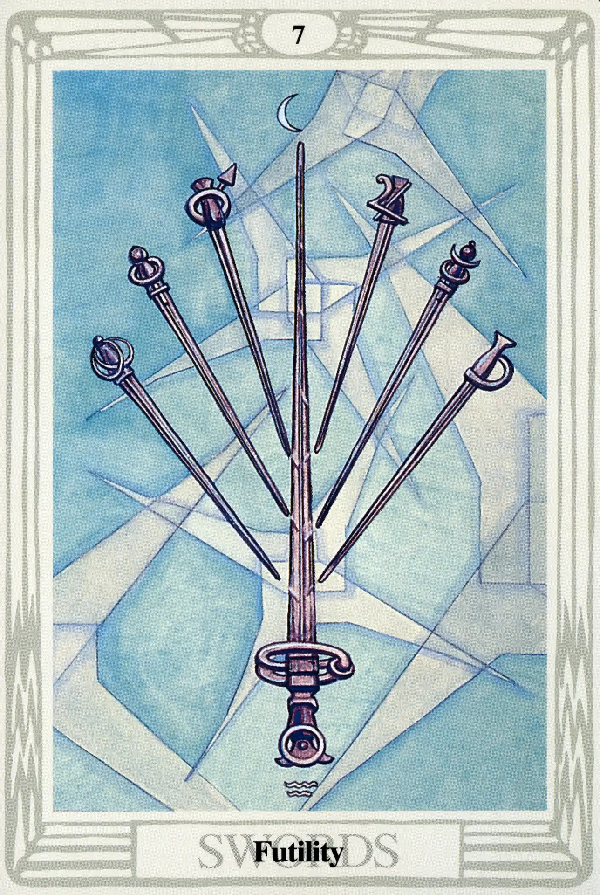

Swords
Seven of Swords
Futility

(Moon in Aquarius)
20° to 30° Aquarius
February 9 to February 18
Original Title: Lord of Unstable Effort.
Golden Dawn Model: Two hands appear from clouds at the right and left side of the card. They each hold three swords like the air dagger of a Zelator Adeptus Minor. A third hand holds up a single sword in the center. The points of all the swords touch each other, the central sword not altogether dividing them. The rose of five petals blooms on the blade of the center sword.
Prince Scale for Netzach: Bright Yellow Green.
The Four Scales for Moon: Blue; Silver; Cold Pale Blue; Silver, rayed Sky Blue.
The Four Scales for Aquarius: Violet; Sky Blue; Bluish Mauve; White, tinged Purple.
Formula: 7 (Netzach) of Swords (Yetzirah) + Moon in Aquarius = FUTILITY
For me, the Seven of Swords is often difficult to interpret in a tarot reading. One would think that a Sword card in Netzach would be absolutely awful. There are, however, embedded complexities in our formula that relieve this card of some of the more tortuous burdens that afflict the other sevens. For example, the very name of the seventh sephira is Victory. This may seem like grasping at straws, but Swords resonate well to words like victory. The Moon in Aquarius adds elements of change and the possibility of compromise. Crowley observes: “It is like a rheumatic boxer trying to “come back'' after being out of the ring for years.” Nonetheless, it is well to remember that, sometimes, even old boxers get in a lucky punch.
Harris chose to illustrate this as a planetary battle: six planets versus the Sun. Look closely at the swords. The hilts of the six small swords arrayed in a crescent near the top of the card carry the symbols of (from left to right) the Moon, Venus, Mars, Jupiter, Mercury, and Saturn. The large central sword is the Sun itself, outnumbered and battle-scarred. The entire arrangement, however, is orderly and restrained, almost suggestive of a moment when a negotiated settlement might be arranged.
I wouldn't bet on it.